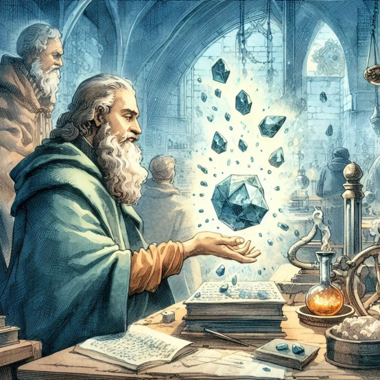

QUÍMICA
Venha conhecer mais sobre a matériaConheça mais sobre Química, em nossos site você encontrará vídeo aulas, experimentos, a história da química e muito mais, confira já
Sobre
História da Química
A Química surge durante a idade média através da Alquimia, que era uma mistura de ciência, arte e magia. O objetivo da Alquimia foi criar a Pedra Filosofal, com capacidade de transformar metais comuns em ouro, e produzir o Elixir da Imortalidade, que curaria de todos os males e garantiria a longa vida. A partir disso surge diversos experimentos e o que conhecemos hoje como química

O que é?
Química é a ciência que estuda a matéria, sua estrutura, formação e as transformações, levando em consideração a energia envolvida em todo o processo.A Química faz parte das Ciências da Natureza e se concentra em observar fenômenos, criar teorias para explicá-los e modelos que os representem.